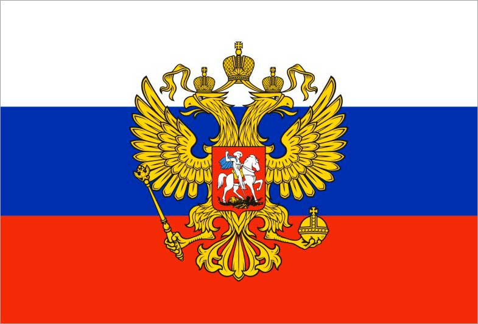

| Выражение или слово | Значение |
|---|---|
| Анбоксинг | процесс распаковывания нового купленного товара и детальная видеосъёмка и/или фотографирование процесса распаковывания с комментариями и впечатлениями того, кто распаковывает. |
| Андеграунд | это форма последовательного эстетического и экзистенциального протеста против государственно-бюрократического стиля управления искусством и литературой. |
| Блоггер | человек, ведущий персональный онлайн-дневник или публикующий контент на различных платформах. |
| Вайб | атмосфера, настроение или энергия, которую испытывает человек или группа людей. |
| Геотег | информация о местоположении, добавляемая к постам или фотографиям. |
| Гифка | короткое анимированное изображение, часто используемое для выражения эмоций. |
| Директ | личные сообщения в социальных сетях. |
| Инфлюенсер | пользователь социальных сетей, обладающий большим количеством подписчиков и влияющий на их мнения и решения. |
| Коммьюнити | сообщество пользователей с общими интересами или целями. |
| Контент-мейкер | создатель контента для социальных сетей или интернет-платформ. |
| Кринж | «съеживаться, сжиматься». Означает чувство жуткой неловкости, стыда за кого-либо. |
| Лендинг | веб-страница с целью привлечения внимания и сбора контактных данных от посетителей. |
| Мем | популярное изображение, видео или фраза, часто используемые для передачи смешного моментента или идеи. |
| Репост | повторное публикование контента другого пользователя на своей странице. |
| Рофл | это сокращение от «Rolling On Floor Laughing» («Катаюсь по полу от смеха»). |
| Скриншот | снимок экрана устройства, используемый для сохранения информации. |
| Сторис | короткие видео или изображения, доступные для просмотра в течение 24 часов. |
| Таймлайн | хронологически упорядоченный список постов и событий на странице пользователя. |
| Треш | низкокачественный, провокационный контент. |
| Троллинг | намеренное раздражение или провокация других пользователей в интернете. |
| Флекс | показ обладания какими-то материальными благами или достижениями. |
| Фолловеры | подписчики в социальных сетях. |
| Фрик | эксцентричный или необычный человек. |
| Хештег | символ "#" перед ключевым словом или фразой, используемый для обозначения темы или категории. |
| Челлендж | вызов или задание, которое пользователи выполняют и делятся результатами в соцсетях. |
| Шаpить | понимать, pазбиpаться. |
| Ютубер | создатель контента на платформе YouTube |
